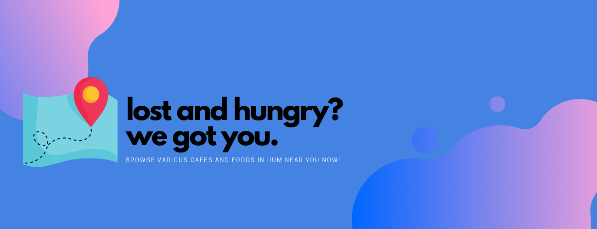
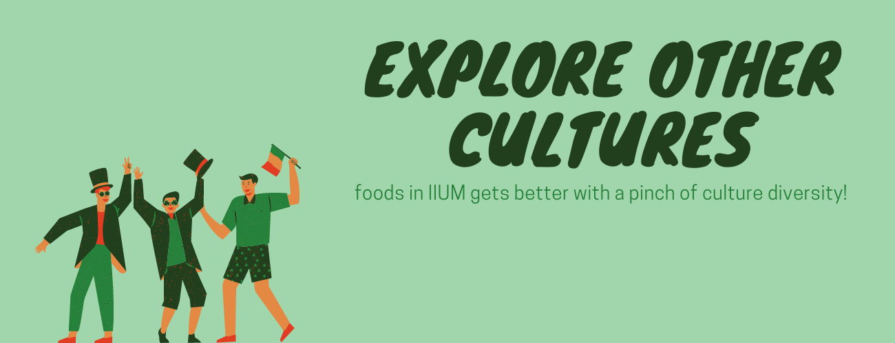

SURVIVAL GUIDE FOR IIUM STUDENTS: Food Edition is a website especially for IIUM Students and those who loves food hunting to search for the best foods and places to eat in IIUM. Our website provides information and update about foods and cafes that are famous within the IIUM community.


Never get hungry again!
Get the latest updates and promotions offered by cafes in IIUM here in this website!